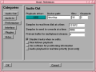
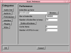
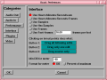
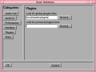
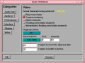

Because of the fragmentation of Linux distributions, Broadcast 2000 can not be run optimally without some intimate configuration for your specific distribution. Runtime configuration is the only option for configuration because of the multitude of parameters. Recompiling from scratch won't fix a broken configuration and might cost you a semester.
Assuming the rpm installed correctly, you can run it with the bcast command. Then run down the preferences.
AUDIO OUT
These parameters control what happens when you play sound from the
timeline.
PLAYBACK DRIVER - The playback driver driver is used when
playing sound from the timeline. Set the parameters for audio output.
Broadcast 2000 has three modes in which it uses an audio device:
Playback, Record, and Duplex.
Each mode supports a subset of the many sound drivers available for
Linux. The drivers are described below.
SAMPLES TO READ FROM DISK: Broadcast 2000 uses a pipeline for
rendering audio. The first stage is reading large chunks of audio from
disk, the samples to read from disk.
SAMPLES TO SEND TO CONSOLE - The second stage is rendering small
fragments through the console to the sound driver. A larger value here
causes more latency when you change mixing parameters but gives more
reliable playback.
PRELOAD SIZE - determines the minimum number of bytes in a
SEEK_SET before switching to a sequential read. A typical value is
2000000. For playing movies, the preload buffer allows audio and video
to play back without seeking back and forth. This eliminates seeking
on slow CD-ROM drives while increasing latency. Set to 0 to
eliminate prebuffering.
DISABLE TRACKS WHEN NO EDITS - During parts of the timeline
which don't have any footage, Broadcast 2000 can either render silence
or not render the track at all. Selecting Disable tracks when no
edits causes tracks to be turned off when they have only silence.
This speeds up video rendering considerably, allows more scenes to be
viewed without alpha channels, but can cause transitions and plugins to
turn off when they should be on.
VIEW FOLLOWS PLAYBACK - Causes the timeline window to scroll
when the playback cursor moves out of view.
USE SOFTWARE FOR POSITIONING INFORMATION - Many soundcards and
sound drivers don't give reliable information on the number of samples
the card has played. When playing video you need this information for
synchronization. This option causes the sound driver to be ignored and
a software timer to be used for synchronization.
AUDIO PLAYBACK IN REALTIME - Back in the days when the AMD K6
was king, this allowed uninterrupted playback on heavy loads. Now
you'll never need it.
These parameters control what happens when you record sound.
RECORD DRIVER -
Determines the device used to bring audio into the system.
DUPLEX DRIVER -
Device used to play back while a recording is in progress.
SAMPLES TO WRITE TO DISK AT A TIME - Recording audio is
performed using a pipeline. Fragments are rapidly read from the sound
driver but only committed to disk in large chunks. This determines how
large the chunks written to disk are.
ENABLE FULL DUPLEX - enables or disables the full duplex button
when you record sound. This is from the days when full duplex on Linux
crashed the entire system and probably doesn't apply anymore.
RECORD IN REALTIME PRIORITY - Another carryover from when kernel
2.2.0 was first released, this eliminated latency problems on that
kernel. You should never need this feature on modern systems.
Index files go here - Back in the days when 4 MB/sec was
unearthly speed for a hard drive, index files were introduced to speed
up drawing the audio tracks. This option determines where index files
are placed on the hard drive
Size of index file - Determines the size of an index file.
Larger index sizes allow smaller files to be drawn faster while slowing
down the drawing of large files. Smaller index sizes allow large files
to be drawn faster while slowing down small files.
Number of index files to keep - To keep the index directory from
becoming unruly, old index files are deleted. This determines the
maximum number of index files to keep in the directory.
Delete all indexes - When you change the index size or you want
to clean out excessive index files, this deletes all the index files.
Cache items - To speed up rendering, several assets are kept
open simultaneously. This determines how many are kept open.
Number of CPUs - When SMP was first standardized in the Linux
kernel, it was thought that duals, quads, and 8 way Xeons would soon
rule the world. The number of CPUs option was introduced to devote
arbitrary numbers of CPUs to rendering and compression. The speed gain
is tremendous but the SMP craze seems to have died off with the AMD
Athlon.
The time format can be represented in any number of formats. Select a
format for the time indicators here. The frame base when using
hours:minutes:seconds:frames is the frame rate of the project.
Clicking in/out points does what - Broadcast 2000 not only allows you to perform editing by dragging
in/out points but also defines three seperate operations which occur
when you drag an in/out point. For each mouse button you select the
behavior in this window. The usage of each editing mode is described
in editing
Format for meter - This option allows you to select the format
for all the VU meters. If you're a CS major select percentage and if
you're a EE major select DB.
Min DB for meter - The minimum DB to display on a meter for EE
majors.
This selects where Broadcast 2000 looks for plugins. It looks in two
directories, the Global plugin directory and the personal
plugin directory. The global plugin directory should be set by
default. The personal plugin directory was originally intended to
allow more flexibility in which plugins you use.
It turned out that since many plugins are required to open project
files you should only store plugins in a global plugin
directory. Storing plugins in a personal plugin directory
causes your projects to be unreadable by anyone else.
Actual framerate being achieved - When playing back, the
framerate is not always the specified framerate for the project. This
displays the actual framerate being achieved during playback.
Play every frame - Broadcast 2000 drops frames to keep the video
synchronized with the audio when the video can't be rendered fast
enough. This option causes it to play every frame even if it means
losing synchronization.
Fastest rendering, alpha channels, floating point alpha channels,
bilinear interpolation - Determines the quality and hence the speed
of rendering.
Fastest rendering - performs low quality scaling, and no alpha
channels.
Alpha channels - performs low quality scaling and a lossy
integer alpha blend.
Floating point alpha channels - performs low quality scaling
and a floating point alpha blend.
Bilinear interpolation - perform a high quality scale with
floating point alpha blending.
ALSA - set to replace OSS eventually. Does the same thing as
OSS but different programming language and specific to Linux. This
might be supported eventually if it isn't phased out beforehand.
ESOUND - A stripped down sound driver which ran on top of OSS.
This allowed playing sound over a network, mixing multiple audio
sources, but lacked synchronization.
IEEE1394 - Allows you to record audio from a digital camcorder.
The camcorder must be set for 16 bit 48kHz 2 channel for this to work.
Video4Linux 2 - Was intended to replace Video4Linux 1 but for
academic reasons was abandonned. Had identical functionality to
Video4Linux 1 but a different programming language. Supported more
than two frames of buffering.
Screen Capture - Records video from your desktop.
LML33 - A capture board from Linux Media Labs which offered
hardware compression. This was a practical way of recording analog
video at high framerates.
IEEE 1394 - This is the communication protocol between digital
camcorders and computers. It was marketed as Firewire and
ILink but more commonly IEEE 1394 in the Linux world for
political reasons. This produces the highest quality of all the
capture drivers.
Recording is supported but not playback to IEEE1394. Because IEEE1394
is rapidly approaching the end of its product cycle, it's unclear
whether playback will ever be supported.

AUDIO IN
PERFORMANCE

INTERFACE

PLUGINS

VIDEO

ABOUT THE SOUND DRIVERS
OSS - The first sound driver for Linux was developed out of the
idea that you could have a single sound driver for all the UNIX
platforms. OSS was the most reliable sound driver. The commercial OSS driver
Supports the most soundcards and resolves most audio problems by
itself.
ABOUT THE VIDEO DRIVERS
Video4Linux 1 - Was developed when analog video capture boards
were popping up on computers. It was intended to be a single common
programming interface to all the capture boards and was designed for
watching TV on a computer. Supports no hardware compression and only 2
frames of buffering. The old analog WinTV cards were the best
supported.